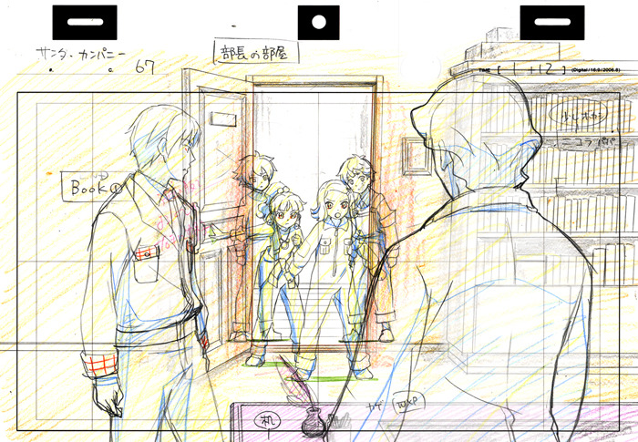

Wie entsteht ein Anime?
Vom ersten Konzept und der Storyentwicklung über das Design der Charaktere bis hin zur Animation und Vertonung – viele Schritte sind nötig, um einen Anime zum Leben zu erwecken. In diesem Artikel erfährst du, wie die einzelnen Phasen ablaufen, welche Techniken zum Einsatz kommen und welche kreativen Entscheidungen getroffen werden, um ein einzigartiges Meisterwerk zu schaffen
Geschichte
Die Ursprünge des Animes reichen bis ins frühe 20. Jahrhundert zurück. Trotz früher Erfolge gingen viele Werke beim Großen Kantō-Erdbeben 1923 verloren. Erst in den 1930er-Jahren begann der Wiederaufbau der Branche, und Animes entwickelten sich über Jahrzehnte zu einem globalen Kulturgut.